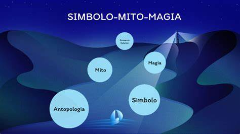

Símbolo, Mito y Magia
Simbolo
Definición Un símbolo es un objeto, palabra, imagen o gesto que representa algo más allá de su significado literal. Los símbolos son elementos clave en la comunicación humana y pueden tener significados compartidos dentro de una cultura o grupo social.
Funciones de los Símbolos
1.Comunicación Cultural: Los símbolos son herramientas fundamentales para transmitir significados y valores culturales de generación en generación.
2. Identidad y Pertenencia: Los símbolos pueden fortalecer la identidad grupal y fomentar el sentido de pertenencia a una comunidad o sociedad.
3. Rituales y Prácticas Sociales: Los símbolos pueden ser utilizados en rituales y prácticas sociales para marcar eventos importantes, como ceremonias religiosas, celebraciones y conmemoraciones.
4.Expresión Artística: Los símbolos son a menudo utilizados en el arte y la expresión creativa para transmitir emociones, ideas y experiencias humanas.
Mito
Definición Un mito es una narrativa tradicional que explora cuestiones fundamentales sobre el origen del universo, la naturaleza humana, los dioses, héroes y eventos significativos en la historia de una comunidad. Los mitos pueden ser sagrados o profanos y sirven para explicar el mundo y proporcionar un marco de referencia para la comprensión del cosmos y la vida humana.
Funciones de los Mitos
1. Explicación del Universo: Los mitos proporcionan respuestas a preguntas fundamentales sobre el origen y la naturaleza del mundo, así como sobre el lugar del ser humano en él.
2. Transmisión de Valores y Normas: Los mitos transmiten valores culturales y normas sociales al presentar ejemplos de comportamiento deseable o indeseable, y las consecuencias de tales acciones.
3. Creación de Identidad: Los mitos pueden fortalecer la identidad y cohesión social al proporcionar una narrativa compartida que une a una comunidad en torno a un conjunto común de creencias y experiencias.
4. Legitimación del Poder: Los mitos pueden justificar y legitimar el poder político, religioso y social al presentar a líderes, instituciones o prácticas como divinamente ordenados o inherentemente válidos.
Magia
Definición La magia es un conjunto de creencias y prácticas destinadas a influir en fuerzas sobrenaturales o causar cambios en el mundo físico mediante rituales, hechizos y objetos simbólicos. La magia puede incluir tanto prácticas rituales religiosas como técnicas de manipulación de energías invisibles.
Funciones de la Magia
1. Control de lo Sobrenatural: La magia busca controlar o influir en fuerzas sobrenaturales, como espíritus, deidades o fuerzas naturales, para obtener beneficios o protección.
2. Resolución de Problemas: La magia se utiliza para resolver problemas individuales o comunitarios, como enfermedades, conflictos sociales o desastres naturales, a través de rituales y hechizos específicos.
3. Reforzamiento de Creencias y Prácticas Religiosas: La magia puede ser una parte integral de las prácticas religiosas al reforzar la fe, proporcionar consuelo y fortalecer la conexión con lo divino.
4. Control Personal: La magia puede proporcionar una sensación de control personal sobre el entorno y el destino, ofreciendo una vía para influir en eventos futuros o protegerse contra fuerzas adversas.
Relacion entre simbolo, mito y magia
Los símbolos, mitos y magia están estrechamente interconectados en muchas culturas, ya que todos juegan roles importantes en la comprensión del mundo, la expresión cultural y la práctica religiosa. Los símbolos pueden estar presentes en mitos como representaciones visuales o metáforas de conceptos abstractos. La magia a menudo utiliza símbolos en rituales para comunicarse con lo sobrenatural o influir en el mundo físico. Los mitos, a su vez, pueden contener elementos mágicos y simbólicos que explican el origen del mundo y las fuerzas sobrenaturales. En conjunto, estos conceptos proporcionan un marco rico para comprender la cultura y la experiencia humana en todas sus dimensiones.
Representación

Video
Bibliografía
- Turner, V. W. (1967). The Forest of Symbols: Aspects of Ndembu Ritual. Cornell University Press.